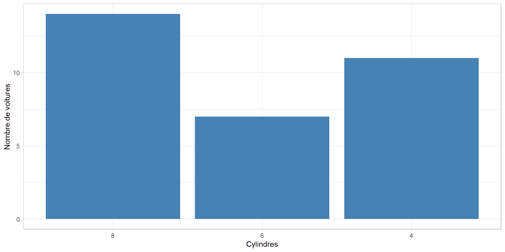
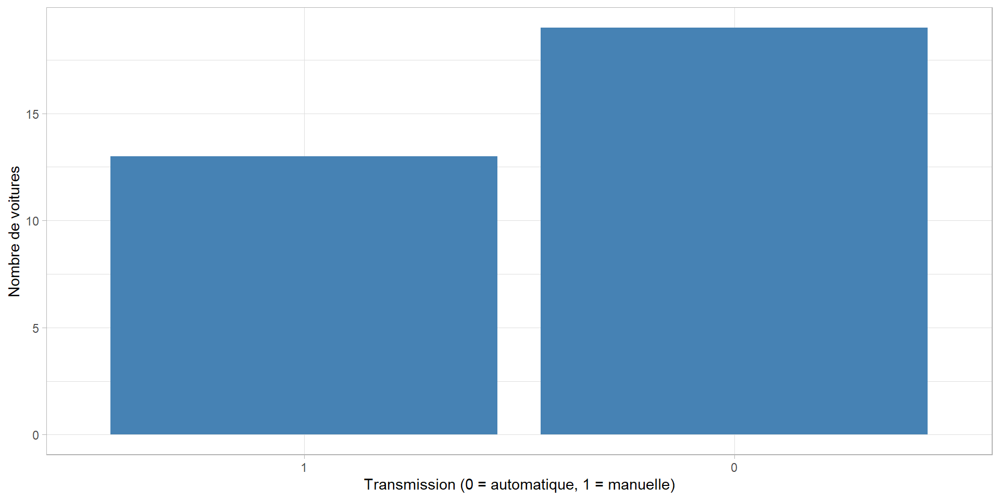

| Colonne | Nom | Description |
|---|---|---|
| [,1] | mpg | Miles par gallon (US) |
| [,2] | cyl | Nombre de cylindres |
| [,3] | disp | Cylindrée (en pouces cubes) |
| [,4] | hp | Puissance brute (chevaux) |
| [,5] | drat | Rapport du pont arrière |
| [,6] | wt | Poids (en milliers de livres) |
| [,7] | qsec | Temps pour parcourir 1/4 de mile |
| [,8] | vs | Type de moteur (0 = V, 1 = ligne droite) |
| [,9] | am | Type de transmission (0 = automatique, 1 = manuelle) |
| [,10] | gear | Nombre de vitesses avant |
| [,11] | carb | Nombre de carburateurs |
| a R : mtcars |
ANALYSE EXPLORATOIRE DES DONNEES MTCARS
Introduction
Contexte
. . .
Le jeu de données mtcars est l’un des ensembles de données les plus connus en statistiques et science des données. Il contient des informations sur les spécifications techniques et les performances de 32 modèles de voitures des années 1970. Ce dataset offre une opportunité unique d’explorer des relations entre des variables mécaniques, comme la consommation en carburant, la puissance ou encore le poids des véhicules.
Problématique
Comment exploiter les relations entre les caractéristiques des voitures pour identifier des groupes ou des tendances qui pourraient aider à la prise de décision dans le secteur automobile ?
Objectif général
Étudier les relations entre les caractéristiques techniques des voitures afin de dégager des tendances et des informations utiles pour la conception ou la sélection des véhicules.
Objectifs spécifiques
- Explorer les relations entre la consommation en carburant (mpg) et les caractéristiques mécaniques
- Identifier des groupes de voitures ayant des caractéristiques similaires à l’aide d’analyses descriptives et graphiques.
Matériels et méthode
Matériels
Logiciel utilisé : RStudio avec les packages nécessaires (ggplot2, dplyr, cowplot, etc.)
Source des données : Jeu de données intégré mtcars.
Méthode
Nettoyage des données : Vérification des valeurs manquantes ou aberrantes.
Analyse descriptive : Moyennes, médianes, écart-types pour chaque variable.
Méthode
Modélisation multivariée : Variables utilisées
- mpg : Consommation de carburant en miles par gallon (variable dépendante).
- wt : Poids du véhicule (en milliers de livres).
- cyl : Nombre de cylindres du moteur.
- am: Type de transmission (0 = automatique, 1 = manuelle).
- carb : Nombre de carburateurs.
- hp : Puissance brute du moteur (en chevaux-vapeur).
Méthode
Modélisation multivariée :
\[ \mathbf{Y} = \mathbf{X} \boldsymbol{\beta} + \boldsymbol{\epsilon} \]
où :
\(Y\): Vecteur des valeurs observées (dépendantes ici mpg)
\(X\) : Matrice des variables explicatives (indépendantes), incluant une colonne de 1 pour l’intercept.
\(\beta\) : Vecteur des coefficients estimés du modèle.
\(\epsilon\) : Vecteur des erreurs résiduelles.
Méthode
Tests de significativité des coefficients
Test t de Student
- Hypothèse nulle \(H_0\) : le coefficient est égal à zéro (c’est-à-dire, la variable n’a pas d’effet significatif).
- Hypothèse alternative \(H_a\) : Le coefficient est différent de zéro.
Si la p-valeur est inférieure à un seuil significatif \(p < 0.05\), nous rejetons l’hypothèse nulle et concluons que la variable a un effet significatif sur la variable dépendante.
Méthode
Significativité globale du modèle : Test F
- Hypothèse nulle \(H_0\): Tous les coefficients sont égaux à zéro (pas de pouvoir explicatif).
- Hypothèse alternative \(H_a\) : Au moins un coefficient est différent de zéro (le modèle est significatif).
Si la p-valeur du test \(F\) est inférieure à \(0.05\), nous rejetons l’hypothèse nulle et concluons que le modèle est significatif.
Méthode
R-carré : qualité d’ajustement
- \(R^2\) varie entre 0 et 1 :
- Un \(R^2\) proche de 1 signifie que le modèle explique bien les variations de la variable dépendante.
- Un \(R^2\) proche de 0 indique que le modèle n’explique que peu ou pas les variations de la variable dépendante.
Méthode
- Visualisations :
Graphiques de dispersion (scatterplots) pour étudier les corrélations
Histogrammes pour analyser la distribution des variables
Résultats
Présentation de l’échantillon
Présentation de l’échantillon
Résumé statistiques
| mpg | cyl | disp | hp | drat | wt | qsec | vs | am | gear | carb | |
|---|---|---|---|---|---|---|---|---|---|---|---|
| min | 10.400000 | 4.000000 | 71.1000 | 52.00000 | 2.7600000 | 1.5130000 | 14.500000 | 0.0000000 | 0.0000000 | 3.0000000 | 1.0000 |
| Q1.25% | 15.425000 | 4.000000 | 120.8250 | 96.50000 | 3.0800000 | 2.5812500 | 16.892500 | 0.0000000 | 0.0000000 | 3.0000000 | 2.0000 |
| Q3.75% | 22.800000 | 8.000000 | 326.0000 | 180.00000 | 3.9200000 | 3.6100000 | 18.900000 | 1.0000000 | 1.0000000 | 4.0000000 | 4.0000 |
| med.50% | 19.200000 | 6.000000 | 196.3000 | 123.00000 | 3.6950000 | 3.3250000 | 17.710000 | 0.0000000 | 0.0000000 | 4.0000000 | 2.0000 |
| mean | 20.090625 | 6.187500 | 230.7219 | 146.68750 | 3.5965625 | 3.2172500 | 17.848750 | 0.4375000 | 0.4062500 | 3.6875000 | 2.8125 |
| max | 33.900000 | 8.000000 | 472.0000 | 335.00000 | 4.9300000 | 5.4240000 | 22.900000 | 1.0000000 | 1.0000000 | 5.0000000 | 8.0000 |
| count | 32.000000 | 32.000000 | 32.0000 | 32.00000 | 32.0000000 | 32.0000000 | 32.000000 | 32.0000000 | 32.0000000 | 32.0000000 | 32.0000 |
| sd | 6.026948 | 1.785922 | 123.9387 | 68.56287 | 0.5346787 | 0.9784574 | 1.786943 | 0.5040161 | 0.4989909 | 0.7378041 | 1.6152 |
| NA’s | 0.000000 | 0.000000 | 0.0000 | 0.00000 | 0.0000000 | 0.0000000 | 0.000000 | 0.0000000 | 0.0000000 | 0.0000000 | 0.0000 |
Note: aR : mtcars
Résultats principaux : Modélisation
Sélection de modèle en ajoutant ou en supprimant des variables pour minimiser l’AIC
| Characteristic | Beta | 95% CI | p-value |
|---|---|---|---|
| wt | -3.9 | -5.4, -2.5 | <0.001 |
| am | 2.9 | 0.05, 5.8 | 0.047 |
| qsec | 1.2 | 0.63, 1.8 | <0.001 |
| Abbreviation: CI = Confidence Interval | |||
Résultats principaux : Modélisation
Variable wt (poids du véhicule)
🔻 Coefficient : -3.9
📌 Interprétation :
- Chaque augmentation d’une unité du poids diminue la consommation estimée de 3.9 mpg.
📉 Effet négatif significatif :
- p < 0.001 : plus le véhicule est lourd, moins il est économe en carburant.
Résultats principaux : Modélisation
Variable am (type de transmission)
🔺 Coefficient : 2.9
📌 Interprétation : - Les véhicules à transmission manuelle consomment en moyenne 2.9 mpg de plus que ceux à transmission automatique, toutes choses égales par ailleurs.
✅ Effet significatif : - p = 0.047 (significatif au seuil de 5 %)
Résultats principaux : Modélisation
Variable qsec (temps sur 1/4 de mile)
🔺 Coefficient : 1.2
📌 Interprétation : - Chaque seconde supplémentaire pour faire le 1/4 mile est associée à une augmentation de 1.2 mpg.
✅ Effet positif et hautement significatif : - p < 0.001
Résultats sécondaires
Répartition des voitures par cylindres

La majorité des voitures ont 4 ou 8 cylindres.
Résultats sécondaires
Répartition des voitures par transmission

Conclusion
Ceci est juste pour montrer comment faire une présentation avec R et quarto. Les résultats ne sont donc pas interprété avec une grande rigueure.